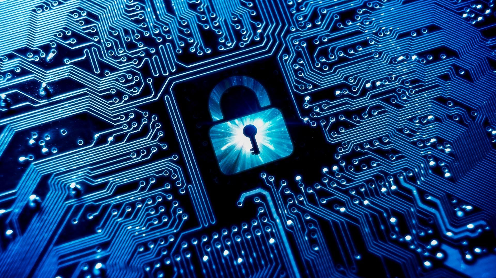

What is Cyber Security
 Cybersecurity is the protection of internet-connected systems such as hardware, software and data from cyberthreats.
Cybersecurity is the protection of internet-connected systems such as hardware, software and data from cyberthreats.The practice is used by individuals and enterprises to protect against unauthorized access to data centers and other computerized systems. A strong cybersecurity strategy can provide a good security posture against malicious attacks designed to access, alter, delete, destroy or extort an organization's or user's systems and sensitive data.
Cybersecurity is also instrumental in preventing attacks that aim to disable or disrupt a system's or device's operations.
How to be safe
Digital security is an all-encompassing term, which includes the tools to secure technology, assets and personal identity in the online and mobile world. Good practices and tools such as anti-virus software, web-services, biometrics and secure personal devices, e.g., smart-card based USB token, the SIM card, the secure chip in payment card or an ePassport are digital security devices because they offer freedom to communicate, work, travel and shop using your digital identity in a way that is convenient, enjoyable and secure.

Do's and Don'ts
 Do's:
Do's:1. Adhere to copyright restrictions when downloading material from the Internet, including software, games, movies, or music.
2. Use a strong and unique password with combinations of numbers, uppercase and lowercase letter and special characters for each account(s).
3. Lock your screen when you're finished using your computer/ tablet/ phone. Further, set it to lock automatically when it goes to sleep.
4. Make privacy settings in social media accounts in such a way that profile and posts are visible only to close friends and acquaintances.
5. Obtain software from trusted sources. Always scan files before opening them.
Don'ts:
1. Don't share your personal information: real name, date of birth, phone number etc. unnecessarily.
2. Don‛t respond to any suspicious email, instant message or web page asking for personal information.
3. Don't enter a password when someone is sitting beside you as they may see it.
4. Don't copy software which has copyright without the author‛s permission as you might get into legal trouble.
5. Don't attempt to infect or in any way try to make someone else‛s computer unusable.